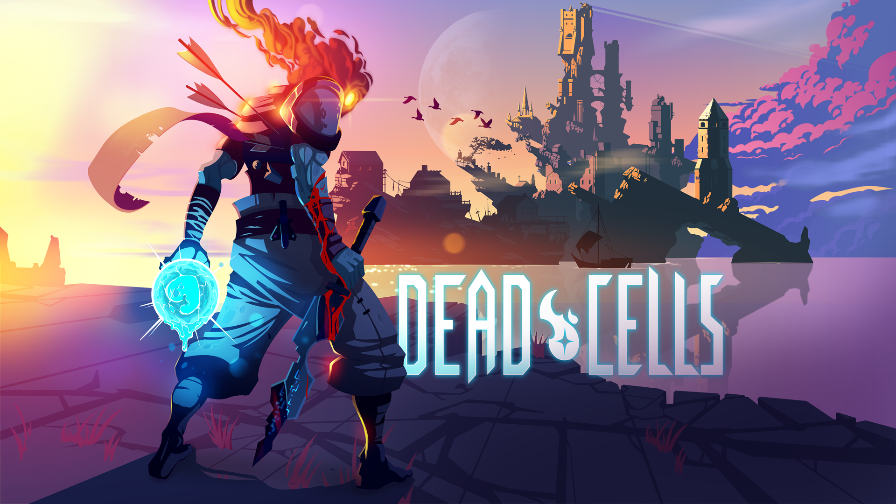

Hollow Knight é um jogo indie de gênero metroidvania desenvolvido e publicado pela Team Cherry, lançado em 2017.
O jogo começa com o personagem principal, O Cavaleiro, entrando nas ruínas de Hallownest, um reino que era habitado por insetos antropomórficos, e vai descobrindo, conforme dialoga com os personagens e explora Hallownest, que ele é um dos receptáculos criados para selar uma entidade divina chamada Radiância que há muito tempo era idolatrada, até a chegada do Rei Pálido, que deu sapiência aos insetos de Hallownest e, em turno, fez eles esquecerem da Radiância e o idolatrarem em vez disso. A Radiância foi o que causou a ruína de Hallownest; ela não possui um corpo físico, mas ela consegue invadir a mente dos insetos, levando-os à loucura e assim criando "A Infecção". Numa tentativa de impedi-la, o governador de Hallownest, o Rei Pálido criou vários receptáculos com uma substância chamada Vazio para sela-la, porém só um desses receptáculos conseguiu ser "vazio" e desprovido de emoções o bastante para a tarefa, ganhando assim o nome Cavaleiro Vazio (Hollow Knight). Com o seu receptáculo perfeito, o Rei Pálido selou a Radiância dentro do Cavaleiro Vazio, que também foi selado dentro de um templo, trazendo paz para Hallownest até a Radiância romper o selo e infectar todos novamente. Com isso o reino entrou em colapso, cidades foram destruídas, insetos foram mortos, e o Rei Pálido desapareceu junto com o seu palácio. Depois de O Cavaleiro descobris tudo que aconteceu no passado, cabe-lhe abrir o selo, derrotar o Cavaleiro Vazio e carregar o fardo de ter a Radiância aprisionada dentro de si, ou enfrentar a entidade e pôr um fim ao caos que ela trouxe.
Dead Cells é um jogo eletrônico roguelike-metroidvania desenvolvido e publicado pela Motion Twin. Após cerca de um ano de acesso antecipado, Dead Cells foi lançado para Microsoft Windows, macOS, Linux, Nintendo Switch, PlayStation 4 e Xbox One em 7 de agosto de 2018.
No game, o jogador vivencia o papel de um homúnculo que assume o controle de um cadáver em uma masmorra, na qual ele deve lutar para sair. Seu objetivo principal é percorrer diversos lugares da ilha até chegar ao "Castelo do Pico Alto", onde ele irá descobrir os grandes mistérios sobre "A Peste" que assola a região.
O jogador ganha várias armas, tesouros e outras ferramentas através da exploração dos níveis gerados de maneira procedural, para combater diversas criaturas mortas-vivas dentro dele. Ao matar inimigos, o jogador pode ganhar "células", um tipo de moeda no jogo que pode ser usada para comprar atualizações permanentes ou desbloquear novos itens, se o jogador conseguir chegar ao "Colecionador" entre cada nível.Dead Cells usa um sistema permadeath, fazendo com que o jogador perca todas as células e outras moedas ou itens caso ele morra. A Motion Twin foi inspirada por The Binding of Isaac e Dark Souls no desenvolvimento do jogo.
Descrição do Jogo 3.BattleBlock Theater, também conhecido como BattleBlock Theatre é um jogo eletrônico de plataforma de comédia e também o segundo jogo bem desenvolvido da série de jogos The Behemoth. A criação dos gráficos, o enredo, a movimentação e afins foram feitas pela The Behemoth, já as diretrizes pertencem a Microsoft Game Studios, sendo lançado em 2013.
Em BattleBlock Theater, o jogador controla um boneco de desenho simples numa sala que possui 14 mapas (9 episódios, dois finais e três mapas opcionais de desafios) e no centro do andar inferior, existe uma loja chamada Gift Shop, que você poderia liberar prisioneiros e ter a possibilidade de jogar com eles (que são aparecem na tevê dita anteriormente) através de troca de gemas, um cristal verde do jogo, e também armas estratégicas ou fatais através de novelos de lã conhecidos como "barbantes". Depois de cada capítulo, rola uma cutscene com bonecos bidimensionais de pau, e o jogo ainda te desafia com três níveis finais que não pertencem a história. O jogo conta com um total de oito capítulos, somando 112 níveis no total.